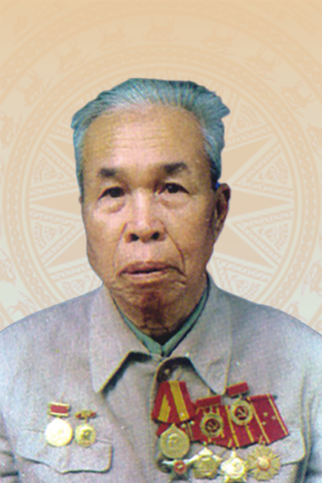

Trang trí khánh tiết đại hội đảng bộ các cấp, nhiệm kỳ 2025-2030 thực hiện như thế nào?


Bí thư Tỉnh ủy Bắc Thái - Thái Nguyên các thời kỳ
Bí thư Tỉnh ủy lâm thời
(từ 9/1945 - 8/1947)
Bí thư Tỉnh ủy
(từ tháng 8/1947 đến tháng 10/1947 và từ quý I/1949 đến tháng 4/1951)
Bí thư Tỉnh ủy Thái Nguyên (từ tháng 10/1947 đến tháng 3/1948)
Bí thư Tỉnh ủy Bắc Thái (từ tháng 6/1965 đến tháng 4/1972)
Bí thư Tỉnh ủy
(từ tháng 4/1948 đến quý I/1949)

Bí thư Tỉnh ủy kiêm Chủ tịch Ủy ban Kháng chiến hành chính tỉnh
(từ tháng 4/1951 đến tháng 4/1953)

Bí thư Tỉnh ủy
(từ tháng 5/1953 đến đầu năm 1954)

Bí thư Tỉnh ủy
(từ 1954 đến tháng 4/1958)
Bí thư Tỉnh ủy
(từ tháng 4/1958 đến tháng 11/1959)
Bí thư Tỉnh ủy
(từ tháng 11/1959 đến tháng 6/1965)

Bí thư Tỉnh ủy Bắc Thái
(từ tháng 4/1972 đến năm 1976)

Ủy viên Trung ương Đảng
Bí thư Tỉnh ủy Bắc Thái
(từ tháng 5/1976 đến năm 1986)

Ủy viên Trung ương Đảng
Bí thư Tỉnh ủy Bắc Thái
(từ tháng 11/1986 đến tháng 10/1989)
Ủy viên Trung ương Đảng
Bí thư Tỉnh ủy Bắc Thái (từ tháng 10/1989 đến tháng 12/1996)
Bí thư Tỉnh ủy Thái Nguyên (từ tháng 1/1997 đến tháng 10/1999)
Ủy viên Trung ương Đảng
Bí thư Tỉnh ủy
(từ tháng 10/1999 đến tháng 9/2002)

Bí thư Tỉnh ủy
(từ tháng 10/2002 đến tháng 12/2005)

Ủy viên Trung ương Đảng
Bí thư Tỉnh ủy
(từ tháng 12/2005 đến tháng 8/2007)
Bí thư Tỉnh ủy
(từ tháng 10/2007 đến tháng 10/2010)

Ủy viên Trung ương Đảng
Bí thư Tỉnh ủy
(từ tháng 10/2010 đến 31/01/2013)

Ủy viên Trung ương Đảng
Bí thư Tỉnh ủy
(từ 31/01/2013 đến tháng 10/2015)

Ủy viên Trung ương Đảng
Bí thư Tỉnh ủy
(từ tháng 10/2015 đến tháng 5/2020)

Ủy viên Trung ương Đảng
Bí thư Tỉnh ủy
(từ tháng 5/2020 đến tháng 6/2024)
Ủy viên dự khuyết Trung ương Đảng
Bí thư Tỉnh ủy
(từ tháng 7/2024 đến tháng 9/2025)
Ủy viên Trung ương Đảng
Bí thư Tỉnh ủy
(từ tháng 9/2025)
Đồng chí
Dương Thiết Sơn
Bí thư Tỉnh ủy
(từ tháng 6/1947 đến tháng 1/1959)
Đồng chí
Doanh Hằng
Bí thư Tỉnh ủy
(từ tháng 2/1959 đến tháng 3/1961)
Đồng chí
Nguyễn Việt Vinh
Bí thư Tỉnh ủy
(từ tháng 3/1961 đến tháng 6/1965)
Đồng chí
Hà Văn Phụng
Bí thư Tỉnh ủy
(từ tháng 1/1997 đến tháng 6/2004)
Đồng chí
Mai Thế Dương
Ủy viên Trung ương Đảng
Bí thư Tỉnh ủy (từ tháng 7/2004 đến tháng 3/2009)
Đồng chí
Dương Đình Hân
Bí thư Tỉnh ủy
(từ tháng 11/2009 đến tháng 5/2010)
Đồng chí
Nguyễn Xuân Cường
Ủy viên Trung ương Đảng
Bí thư Tỉnh ủy (từ tháng 5/2010 đến tháng 1/2013)
Đồng chí
Hà Văn Khoát
Bí thư Tỉnh ủy
(từ tháng 3/2013 đến tháng 3/2015)
Đồng chí
Nguyễn Văn Du
Ủy viên Trung ương Đảng
Bí thư Tỉnh ủy (từ tháng 3/2015 đến tháng 10/2020)
Đồng chí
Hoàng Duy Chinh
Ủy viên Trung ương Đảng
Bí thư Tỉnh ủy (từ tháng 10/2020 đến tháng 6/2025)
Đồng chí
Ủy viên Trung ương Đảng
Bí thư Tỉnh ủy

Đồng chí
Vương Quốc Tuấn
Ủy viên Trung ương Đảng
Phó Bí thư Tỉnh ủy
Chủ tịch UBND tỉnh
Đồng chí
Nguyễn Đăng Bình
Phó Bí thư Thường trực Tỉnh ủy
Trưởng Đoàn đại biểu Quốc hội tỉnh Thái Nguyên

Đồng chí
Bùi Văn Lương
Phó Bí thư Tỉnh ủy
Chủ tịch HĐND tỉnh Thái Nguyên

Đồng chí
Đinh Quang Tuyên
Phó Bí thư Tỉnh ủy
Chủ tịch Ủy ban MTTQ tỉnh

Đồng chí
Đỗ Đức Công
Ủy viên Ban Thường vụ Tỉnh ủy
Phó Chủ tịch Thường trực HĐND tỉnh Thái Nguyên

Đồng chí
Bùi Đức Hải
Ủy viên Ban Thường vụ Tỉnh ủy
Giám đốc Công an tỉnh

Đồng chí
Đỗ Thị Minh Hoa
Ủy viên Ban Thường vụ Tỉnh ủy
Trưởng Ban Tuyên giáo và Dân vận Tỉnh ủy
Đồng chí
Vũ Duy Hoàng
Ủy viên Ban Thường vụ Tỉnh ủy
Phó Chủ tịch Thường trực Ủy ban MTTQ tỉnh

Đồng chí
Trần Thị Lộc
Ủy viên Ban Thường vụ Tỉnh ủy
Phó Chủ tịch HĐND tỉnh

Đồng chí
Bùi Văn Lương
Ủy viên Ban Thường vụ Tỉnh ủy
Phó Chủ tịch UBND tỉnh

Đồng chí
Lường Đức Thắng
Ủy viên Ban Thường vụ Tỉnh ủy
Trưởng Ban Nội chính Tỉnh ủy

Đồng chí
Phạm Văn Thọ
Ủy viên Ban Thường vụ Tỉnh ủy
Giám đốc Sở Công thương tỉnh
Đồng chí
Dương Văn Tiến
Ủy viên Ban Thường vụ Tỉnh ủy
Trưởng Ban Tổ chức Tỉnh ủy
Đồng chí
Hoàng Thị Thu Trang
Ủy viên Ban Thường vụ Tỉnh ủy
Chủ nhiệm Ủy ban Kiểm tra Tỉnh ủy
Đồng chí
Nguyễn Thành Minh
Ủy viên Ban Thường vụ Tỉnh ủy
Chánh Văn phòng Tỉnh ủy
Đồng chí
Ngô Tuấn Anh
Ủy viên Ban Thường vụ Tỉnh ủy
Chỉ huy trưởng Bộ CHQS tỉnh
Đồng chí
Nguyễn Linh
Ủy viên Ban Thường vụ Tỉnh ủy
Phó Chủ tịch UBND tỉnh
| STT | Họ và tên | Chức vụ, đơn vị công tác |
|---|---|---|
| 1 | Trịnh Xuân Trường | Ủy viên Trung ương Đảng, Bí thư Tỉnh ủy |
| 2 | Vương Quốc Tuấn | Ủy viên Trung ương Đảng, Phó Bí thư Tỉnh ủy, Chủ tịch UBND tỉnh |
| 3 | Nguyễn Đăng Bình | Phó Bí thư Thường trực Tỉnh ủy Thái Nguyên |
| 4 | Đinh Quang Tuyên | Phó Bí thư Tỉnh ủy, Chủ tịch Ủy ban MTTQ tỉnh |
| 5 | Hoàng Thu Trang | Ủy viên Ban Thường vụ Tỉnh ủy, Chủ nhiệm Ủy ban Kiểm tra Tỉnh ủy |
| 6 | Dương Văn Tiến | Ủy viên Ban Thường vụ Tỉnh ủy, Trưởng Ban Tổ chức Tỉnh ủy |
| 7 | Lường Đức Thắng | Ủy viên Ban Thường vụ Tỉnh ủy, Trưởng Ban Nội chính Tỉnh ủy |
| 8 | Đỗ Thị Minh Hoa | Ủy viên Ban Thường vụ Tỉnh ủy, Trưởng Ban Tuyên giáo và Dân vận Tỉnh ủy |
| 9 | Đỗ Đức Công | Ủy viên Ban Thường vụ Tỉnh ủy, Phó Chủ tịch Thường trực HĐND tỉnh |
| 10 | Trần Thị Lộc | Ủy viên Ban Thường vụ Tỉnh ủy, Phó Chủ tịch HĐND tỉnh |
| 11 | Bùi Văn Lương | Phó Bí thư Tỉnh ủy, Chủ tịch HĐND tỉnh Thái Nguyên |
| 12 | Nguyễn Linh | Ủy viên Ban Thường vụ Tỉnh ủy, Phó Chủ tịch UBND tỉnh |
| 13 | Bùi Đức Hải | Ủy viên Ban Thường vụ Tỉnh ủy, Giám đốc Công an tỉnh |
| 14 | Vũ Duy Hoàng | Ủy viên Ban Thường vụ Tỉnh ủy, Phó Chủ tịch Thường trực Ủy ban MTTQ tỉnh |
| 15 | Phạm Văn Thọ | Ủy viên Ban Thường vụ Tỉnh ủy, Giám đốc Sở Công Thương |
| 16 | Nguyễn Thành Minh | Ủy viên Ban Thường vụ Tỉnh ủy, Chánh Văn phòng Tỉnh ủy |
| 17 | Ngô Tuấn Anh | Ủy viên Ban Thường vụ Tỉnh ủy, Chỉ huy trưởng Bộ CHQS tỉnh |
| 18 | Hà Sỹ Huân | Tỉnh ủy viên, Phó Trưởng Đoàn đại biểu Quốc hội khóa XV tỉnh Thái Nguyên |
| 19 | Mai Thị Thúy Nga | Tỉnh ủy viên, Phó Chủ tịch HĐND tỉnh |
| 20 | Đồng Văn Lưu | Tỉnh ủy viên, Phó Chủ tịch HĐND tỉnh |
| 21 | Nguyễn Thị Loan | Tỉnh ủy viên, Phó Chủ tịch UBND tỉnh |
| 22 | Nông Quang Nhất | Tỉnh ủy viên, Phó Chủ tịch UBND tỉnh |
| 23 | Phạm Việt Đức | Tỉnh ủy viên, Phó Trưởng Ban Thường trực Ban Tổ chức Tỉnh ủy |
| 24 | Bùi Thanh Hải | Tỉnh ủy viên, Phó Chủ nhiệm Thường trực Ủy ban Kiểm tra Tỉnh ủy |
| 25 | Vi Văn Nghĩa | Tỉnh ủy viên, Phó Chủ nhiệm Ủy ban Kiểm tra Tỉnh ủy |
| 26 | Nguyễn Minh Quang | Tỉnh ủy viên, Phó Trưởng Ban Tuyên giáo và Dân vận Tỉnh ủy |
| 27 | Ngô Thế Hoàn | Tỉnh ủy viên, Trưởng Ban Pháp chế, HĐND tỉnh |
| 28 | Phạm Thị Thu Thủy | Tỉnh ủy viên, Trưởng Ban Văn hóa - Xã hội, HĐND tỉnh |
| 29 | Hà Thị Đào | Tỉnh ủy viên, Phó Chủ tịch Ủy ban MTTQ tỉnh, Chủ tịch Hội Liên hiệp Phụ nữ tỉnh |
| 30 | Đỗ Thị Hiền | Tỉnh ủy viên, Phó Chủ tịch Ủy ban MTTQ tỉnh, Chủ tịch Liên đoàn Lao động tỉnh |
| 31 | Phan Thanh Hà | Tỉnh ủy viên, Phó Chủ tịch Ủy ban MTTQ tỉnh, Chủ tịch Hội Nông dân tỉnh |
| 32 | Dương Xuân Hùng | Tỉnh ủy viên, Giám đốc Sở Văn hóa, Thể thao và Du lịch |
| 33 | Nguyễn Thu Huyền | Tỉnh ủy viên, Hiệu trưởng Trường Chính trị tỉnh |
| 34 | Nguyễn Thị Vũ Anh | Tỉnh ủy viên, Tổng Biên tập Báo và Phát thanh, Truyền hình tỉnh |
| 35 | Nguyễn Quốc Hữu | Tỉnh ủy viên, Giám đốc Sở Nội vụ |
| 36 | Lê Kim Phúc | Tỉnh ủy viên, Giám đốc Sở Tài chính |
| 37 | Đặng Văn Huy | Tỉnh ủy viên, Giám đốc Sở Nông nghiệp và Môi trường |
| 38 | Nguyễn Ngọc Tuân | Tỉnh ủy viên, Giám đốc Sở Giáo dục và Đào tạo |
| 39 | Đặng Ngọc Huy | Tỉnh ủy viên, Giám đốc Sở Y tế |
| 40 | Dương Hữu Bường | Tỉnh ủy viên, Giám đốc Sở Khoa học và Công nghệ |
| 41 | Trần Văn Hậu | Tỉnh ủy viên, Chánh Thanh tra tỉnh |
| 42 | Trần Trọng Chung | Tỉnh ủy viên, Chánh Văn phòng UBND tỉnh |
| 43 | Vũ Đức Chính | Tỉnh ủy viên, Chánh Văn phòng Đoàn đại biểu Quốc hội và HĐND tỉnh |
| 44 | Hoàng Thanh Oai | Tỉnh ủy viên, Giám đốc Sở Dân tộc và Tôn giáo |
| 45 | Bùi Đức Thuận | Tỉnh ủy viên, Chánh án Tòa án nhân dân tỉnh |
| 46 | Vũ Thị Lệ Hằng | Tỉnh ủy viên, Giám đốc Sở Tư pháp |